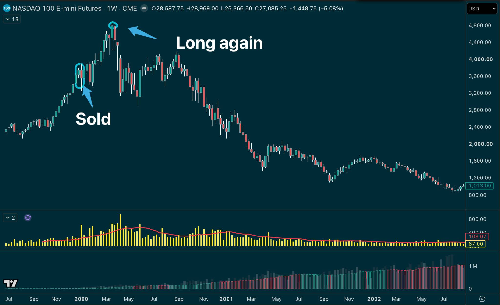

Another wild day yesterday, relentless bid across the board.
Except Nvidia, of course…
- Rule #1: Don't cheat on your wife.
- Rule #2: Definitely don't cheat on your wife with an alleged Chinese spy.
Anyway… back to questionable decisions.
In January 2000, Stanley Druckenmiller sold his tech stocks.
He'd made good money during the boom, thought valuations had become ridiculous, and decided to step aside.
But the market kept going, and going, and going…
And while he was sitting out, two of his managers were still making money trading the bull run. Druck was watching them rack up gains, which was driving him nuts.
By March, he couldn't stand it anymore, and yep, he bought back in.
“I think I missed the top by an hour”, he once said in an interview.
Ouch…
Now, different timeframe, different sums of money… but a fairly familiar feeling, right?
We come out of a trade, watch it keep running, and suddenly getting back in feels urgent. The next entry becomes tangled up with how we feel about the previous exit.
And if someone like Druckenmiller can get caught up in that, we probably shouldn't assume we're immune…
DON'T LET YOUR LAST TRADE RUIN YOUR NEXT ONE

And it doesn't have to be a winner we've cut early, either.
- 👉 A nasty loss can make us hesitate on a perfectly valid setup.
- 👉 A few winners can make us feel comfortable taking something we'd normally leave alone.
If we're not careful, the prior trade shapes how we perceive the next.
So, to help combat that, tonight's Train Your Trading Brain webinar with Pepperstone is:
Don't Let Your Last Trade Ruin Your Next One
We'll explore recency bias, how recent outcomes can influence our judgement, and possible ways to reset before the next trade.
Because that next setup deserves to be judged on its own merits… even if we are still a bit annoyed about the last one. 😁
Join me tonight at 7 pm UK.